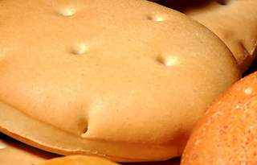

Chapalele is a Chilean bread made with only two main ingredients – potatoes and flour. It originates from the Chiloé Island, where it is traditionally steamed and cooked in curanto – a hole in the ground used for preparing food. However, it can also be fried, pan-fried, or baked.
Meal prep time : 1 hour
Servings : 12